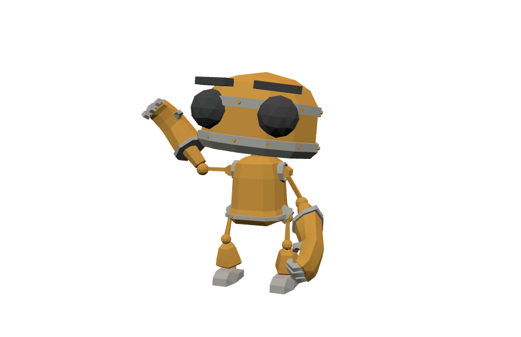
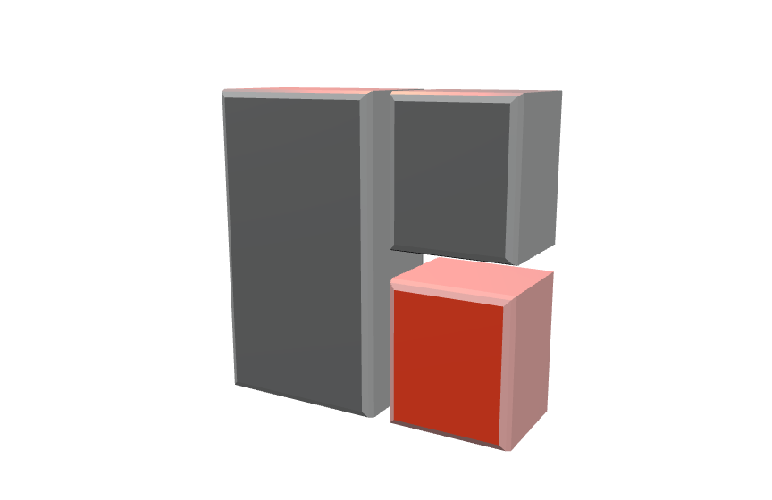
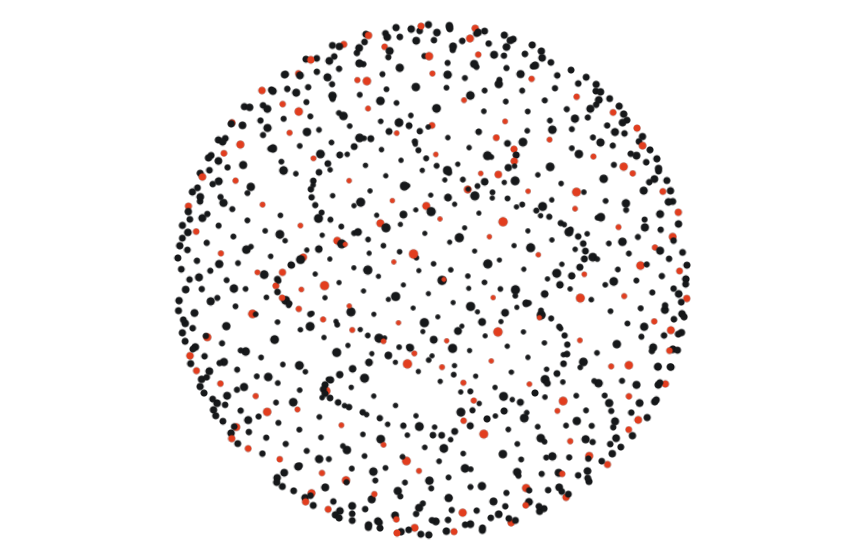

El modelo inicia en reposo con encuadre automático y responde a los steps declarados en JSON.
Step 2: mezcla suave de Idle a Wave.
Step 3: giro y acercamiento de cámara.

Toma un vector inline del deck y genera geometría con bisel y colores del pack.
Step 2: rotación de cámara para destacar el relieve.

Nube de puntos determinista que converge hacia su forma final en cada step.
Step 2: convergencia intermedia.
Step 3: esfera completa en equilibrio.
